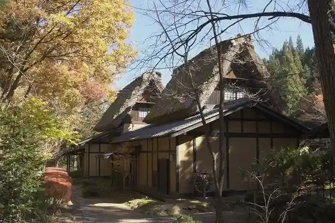
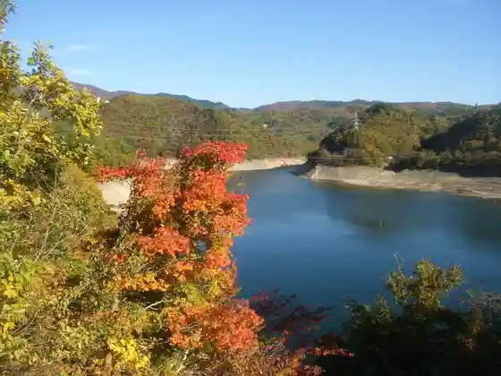
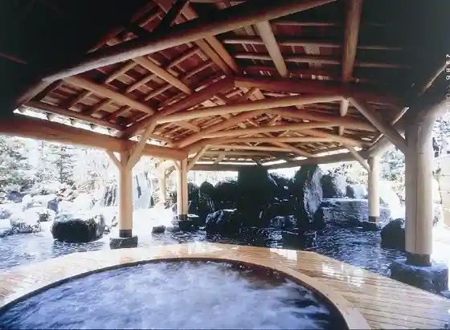

Nippon no Yado Hida Takayama Wa no Sato
Takayama, Gifu · 0577-53-2321 · Official / source link

Miboro Dam no Autumn Leaves
Takayama, Gifu · 05769-2-2272 · Official / source link

Okuhidaonsen Sato no Autumn Leaves
Takayama, Gifu · 0578-89-2614 · Official / source link
Hida Takayama Onsen
Takayama, Gifu · 0577-36-1011 · Official / source link

Okuhidaonsen Sato
Takayama, Gifu · 0578-89-2614 · Official / source link
Hirayu Onsen
Takayama, Gifu · 0578-89-3030 · Official / source link
Fukuchi Onsen
Takayama, Gifu · 0578-89-2458 · Official / source link
Tochio Onsen
Takayama, Gifu · 0578-89-2458 · Official / source link
Shinhodaka Onsen
Takayama, Gifu · 0578-89-2458 · Official / source link
Shinpei Yu Onsen
Takayama, Gifu · 0578-89-2458 · Official / source link
Museum Hida
Takayama, Gifu · 0577-37-6111 · Official / source link
Hirayu Onsen Ashiyu
Takayama, Gifu · 0578-89-3030 · Official / source link
Hirayu no Mori Ashiyu
Takayama, Gifu · 0578-89-3338 · Official / source link
Okuhida Toreningu Center Puru
Takayama, Gifu · 0578-89-2145 · Official / source link
Nabe Hirataka Hara Su no Shuhafude Tour (Shinhodaka Ropuei)
Takayama, Gifu · 0578-89-2252 · Official / source link
Shiroyama Park Cherry Blossoms
Takayama, Gifu · 0577-32-3333 · Official / source link
Yakushido no Shidarezakura
Takayama, Gifu · 0577-55-3777 · Official / source link
Asahi Town Aoya Chiku Jinmei Shrine
Takayama, Gifu · 0577-55-3777 · Official / source link
Hida Takayama Furui Town Nami (Shita Town Tori)
Takayama, Gifu · 0577-32-3333 · Official / source link
Yari Ken Kan Yari Ken Baths (Tachi Yori Yu)
Takayama, Gifu · 0578-89-2808 · Official / source link
Doraibuin Miboro Mizumi
Takayama, Gifu · 05769-2-2266 · Official / source link
Aki Kami Highlands
Takayama, Gifu · 0577-56-1004 · Official / source link
Autumn Leaves no Norikura Sukai Line
Takayama, Gifu · 0577-78-2345 · Official / source link
Shinhodaka Ropuei no Autumn Leaves
Takayama, Gifu · 0578-89-2252 · Official / source link
(Ari) Funasaka Shuzo Mise
Takayama, Gifu · 0577-32-0016 · Official / source link
Hida Takayama Festival Forest Shoku Matsuri Kan
Takayama, Gifu · 0577-37-1000 · Official / source link
Kurumi Shima Campground
Takayama, Gifu · 0576-62-3349 · Official / source link
Kurokawa Chiku Tenma Shrine no Shidarezakura
Takayama, Gifu · Official / source link
Asai Chiku Jinmei Jinja Shidarezakura
Takayama, Gifu · Official / source link
Horen Tera no Amida Sakura
Takayama, Gifu · 0577-55-3258 · Official / source link
I no Shishi Taki
Takayama, Gifu · 0577-55-3464 · Official / source link
Tsutsumi Orchard
Takayama, Gifu · 0577-52-2766 · Official / source link
Arupusu Kaido Hirayu Hirayu Basutaminaru
Takayama, Gifu · 0578-89-2611 · Official / source link
Koya Kakiuchi Farm (Gonta Farm) Ichigo Kari
Takayama, Gifu · 0577-36-3141 · Official / source link
Hida Sekai Seikatsu Bunka Center
Takayama, Gifu · 0577-37-6111 · Official / source link
Takayama Tami Culture Hall
Takayama, Gifu · 0577-33-8333 · Official / source link
Feafiirudo · Bai · Mariotto · Gifu Takayama Shirakawa Sato
Takayama, Gifu · Official / source link
Dai 4 Kai Hida Mo no Zukuri Ten (Garasu to Miru Hida no Fukei)
Takayama, Gifu · Official / source link
Shinrin Rentarusabisu forenta Ko no Hara Kogen Kyanpueria
Takayama, Gifu · 0574−78−2516 · Official / source link
Dai 6 Kai Hida Mo no Zukuri Ten (Hida no Kibori no Waza Tokokoro Hida Ichigai Shu Toso no Nakama Tachi)
Takayama, Gifu · 0577-35-0370 · Official / source link
Kurumato Roku Umaya Park
Takayama, Gifu · 05769-2-2211 · Official / source link
Hida Shokawa no Soba no Hana
Takayama, Gifu · 05769-2-2272 · Official / source link
Uzu Ko Shiju Hachi Taki Campground
Takayama, Gifu · 0577-72-3948(4/1~9/30) · Official / source link
San Tsu Taki
Takayama, Gifu · 0577-55-3464 · Official / source link
Sho Hasu Tera
Takayama, Gifu · 0577-32-2052 · Official / source link
Takayama Matsurigoto Memorial Museum
Takayama, Gifu · 0577-32-0406 · Official / source link
Kawakami Bettei Shiseki Park (Shi Shitei Bunkazai)
Takayama, Gifu · Official / source link
Fudoki no Oka Shiseki Park
Takayama, Gifu · 0577-36-5800 · Official / source link
Okuhida Sabo Juku
Takayama, Gifu · 0578-89-2133 · Official / source link
Seseragi Campground
Takayama, Gifu · 070-4104-8757 · Official / source link
N.A.O Takayama Suzuran Kogen Campground
Takayama, Gifu · 0577-40-0000 · Official / source link
Shin Kurumi Land
Takayama, Gifu · 090-6585-7587 · Official / source link
Sakurayama Nikko Kan
Takayama, Gifu · 0577-32-5100 · Official / source link
Do Yuki Ue Iseki
Takayama, Gifu · 0577-52-3111 · Official / source link
Machihitopura Za Kankakokan
Takayama, Gifu · 0577-33-5055 · Official / source link
Miyagawa Green Park
Takayama, Gifu · 0577-32-3333 · Official / source link
Hida Takayama Tourist Information
Takayama, Gifu · 0577-32-5328 · Official / source link
Taiko I (Oburui) no Sembon Katsura
Takayama, Gifu · 0577-59-2211 · Official / source link
Kurafutogyararii & Wakushoppu noconocoya
Takayama, Gifu · 0577-68-1141 · Official / source link
Ishibashi Haiji to Shinso (Nippon Isan Kosei Bunkazai)
Takayama, Gifu · 0577-72-3111 · Official / source link
Koju Ioriato (Nippon Isan Kosei Bunkazai)
Takayama, Gifu · 0577-72-3111 · Official / source link
Shinhodaka Center
Takayama, Gifu · 0578-89-3610 · Official / source link
Higashiyama Hakusan Shrine
Takayama, Gifu · Official / source link
Sekai no Konchu Kan
Takayama, Gifu · 0577-37-1000 · Official / source link
Matsukura Castle Ruins (Kuni Shitei Historic Site)
Takayama, Gifu · 0577-35-3156 · Official / source link
Teiisarontekisui
Takayama, Gifu · 0577-32-0820 · Official / source link
Horen Tera
Takayama, Gifu · 0577-55-3777 · Official / source link
Soyu Tera
Takayama, Gifu · 0577-32-1958 · Official / source link
Amaterasu Tera
Takayama, Gifu · 0577-32-6345 · Official / source link
Hida no Nature Wo Karada Ippai Taikan ! Kuchu Asurechikku Experience
Takayama, Gifu · 080-9832-2378 · Official / source link
Ryomen Sukuna Yohai Tokoro
Takayama, Gifu · Official / source link
Nissho Gaku
Takayama, Gifu · Official / source link
Otani Shidare Sakura Park no Suiren
Takayama, Gifu · 0577-68-2338 · Official / source link
Senkoji Enku Butsuji Takara Kan
Takayama, Gifu · 0577-78-1021 · Official / source link
Sanchoku Market Sukuna
Takayama, Gifu · Official / source link
TARC Rental Cycle
Takayama, Gifu · 0577-57-8751 · Official / source link